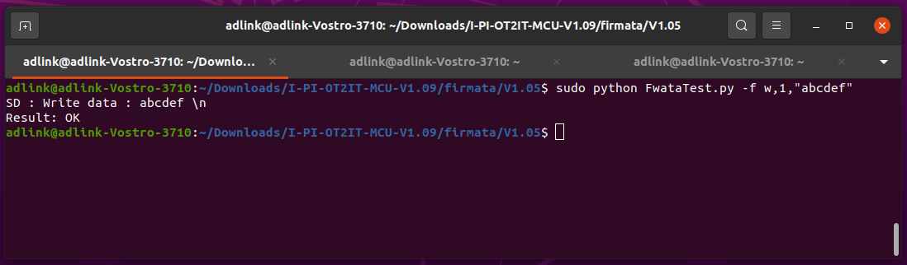
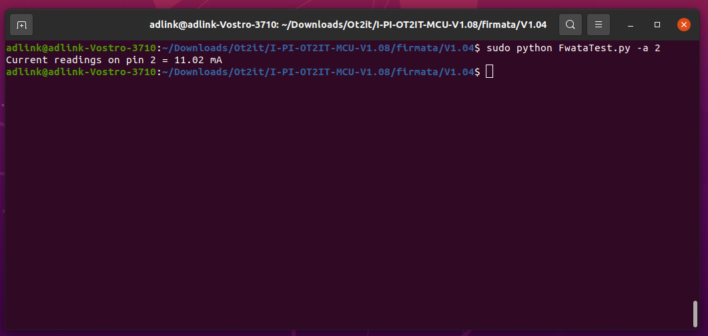

Setup and Test the Firmata for I-Pi OT2ITSetup Firmmata on OT2IT HardwareFollow the steps to download I-PI-OT2IT MCU application file: 1. Download and install the latest version of the BOSSA tool **Note:** First time installer complete the installation setup by clicking "Next" as shown in the screenshots and install device software. 2. You can see the below screen, when you run BOSSA 3. Enter bootloader Connect the device (I-PI-OT2IT) **Micro-USB2.0_5_Type-AB** COM port to a PC COM USB COM port by a micro-USB cable. And power on the device. There could be 3 conditions for the MCU Firmware: (1) If no firmware loaded in MCU, please download the bootloader first. Then go to (2) (2) If only the bootloader has been downloaded, you should see a window pop up, like the one below (3) If the bootloader with an I-PI-OT2IT MCU application code has been downloaded. You can press the **reset button 2 times** shortly to make the MCU code go into bootloader mode. And then you will see the bootloader mode window, like the one above 4. Refresh and select the COM port detected when connecting I-Pi OT2IT. **Note:** When the correct COM port is selected, the device is connected to the tool 5. To download the MCU application Firmware file, contact [ipi.wiki@adlinktech.com](mailto:ipi.wiki@adlinktech.com) 6. Set the flash offset to **0x4000** 7. Write the code 8. When the code has been written, you can see a successful window. Then power off and power on the device to run the new application Setup Firmata on Host SystempyFirmata InstallationDownload pyFirmata (Python interface) by using following command. The preferred way to install is with pip: pip install pyFirmata You can also install from source with python setup.py install. You will need to have setuptools installed: git clone https://github.com/tino/pyFirmatacd pyFirmatapython setup.py install Update COM Port Find the “device_port” in the Firmware file. Ex: (C:\Users\Downloads\I-PI-OT2IT-MCU-V1.08\firmata\V1.04) Update “device_port” according to the COM port selected in the hardware setup Test Firmwata Power off the system Power on the system Connect USB cable to the USB port and a host PC Run command mode under firmata Firmata VersionRun the command to get firmata command version. sudo python FwataTest.py -v 0 MCU VersionRun the command to get MCU version. sudo python FwataTest.py -m 0 LED Test Pin number LED color 11 Red 12 Green 13 Blue Turn On LED RED sudo python FwataTest.py -o 11,1 Turn Off LED RED sudo python FwataTest.py -o 11,0 Check ButtonsReset Button (SWI201) When button is pressed, LED goes [ COM11 port missing ] When button is released, LED comes back [ COM11 port comes back ] Key 1 Button (SWI202) It reads GPIO status Press key 1 and run the command. sudo python FwataTest.py -i 8 Note: It returns 1 (High) Release key 1 and run the command. sudo python FwataTest.py -i 8 Note: It returns 0 (Low) Key 2 Button (SWI203) It reads GPIO status Press key 2 and run the command. sudo python FwataTest.py -i 9 Note: It returns 1 (High) Release key 2 and run the command. sudo python FwataTest.py -i 9 Note: It returns 0 (Low) SD Card FunctionCreate DirectoryRun the command to create a directory. sudo python FwataTest.py -f m,"/DIR0" Create FileRun the command to create a file “TEST0.TXT” under “DIR0”. sudo python FwataTest.py -f c,"/DIR0/TEST0.TXT" Open FileRun the command to open “TEST0.TXT” file under “DIR0” directory. sudo python FwataTest.py -f o,"/DIR0/TEST0.TXT" Open DirectoryRun the command to open “DIR0” directory. sudo python FwataTest.py -f o,"/DIR0" List FilesRun the command to list the files. Note: Before you list the file, open the directory sudo python FwataTest.py -f l,0 For the list of intermediately created files, run this command. sudo python FwataTest.py -f l,1 Write DataRun the command to write data “1234567890” as a string. Note: Before you write your data, open the file sudo python FwataTest.py -f w,0,"1234567890" Run the command to write data “abcdef” as a string with new line (‘\n’) to the opened file. sudo python FwataTest.py -f w,1,"abcdef"  Run the command to write as a character. sudo python FwataTest.py -f w,2,65,66,67,68 Read DataRun the command to read data from the beginning. Note: Before you read your data, open the file. Note: At most, 255 bytes can be read. sudo python FwataTest.py -f r,0 Run this command if you want to continue reading after writing another data. sudo python FwataTest.py -f r,1 Delete FileRun the command to delete the file “TEST0.TXT”. sudo python FwataTest.py -f d,"/DIR0/TEST0.TX Delete DirectoryRun the command to delete the directory “/DIR0”, there should be no file under “/DIR0”. sudo python FwataTest.py -f k,"/DIR0" Test RS485 BusSet Baud RateRun the command to get the baud rate of RS485. sudo python FwataTest.py -u 0 Run the command to set baud rate. sudo python FwataTest.py -u 1,1 Command Baud Rate python FwataTest.py -u 1,1 9600 python FwataTest.py -u 1,2 19200 python FwataTest.py -u 1,3 38400 python FwataTest.py -u 1,4 57600 python FwataTest.py -u 1,5 115200 Testing RS485 Bus PortConnect serial port (USB to RS485) in device 2 and use the -D option to specify the path to the desired serial port. For example, to use /dev/ttyUSB0, run minicom like this: minicom -D /dev/ttyUSB0 Run the command to send (ASCII) data through RS485 from device 1. sudo python FwataTest.py -s 1,60,59,58,57,56,55,54,53,52,51,50,49,48 Check the ASCII values received in minicom. Note: To send the data from device 2 turn on ‘Local Echo’ by using Ctrl+A and E and enter the data Run the command to receive the respective ASCII values. sudo python FwataTest.py -s 0 Pin ValueRun the commands to get pins value. sudo python FwataTest.py -y 0 sudo python FwataTest.py -y 1 TemperatureRun the command to get temperature. sudo python FwataTest.py -t 0 Digital InputRun the commands to check DI default state. sudo python FwataTest.py -i 0sudo python FwataTest.py -i 1sudo python FwataTest.py -i 2sudo python FwataTest.py -i 3sudo python FwataTest.py -i 4sudo python FwataTest.py -i 5sudo python FwataTest.py -i 6sudo python FwataTest.py -i 7 Note: Default (Low) should return ‘True’ Note: DI 7 should return ‘False’ default Now, connect DI 7 to (LOW) and it returns ‘True’. Run the commands to check DI state when connect DI to high voltage. sudo python FwataTest.py -i 0sudo python FwataTest.py -i 1sudo python FwataTest.py -i 2sudo python FwataTest.py -i 3sudo python FwataTest.py -i 4sudo python FwataTest.py -i 5sudo python FwataTest.py -i 6 Note: Connect to (High) should return ‘False’ Digital OutputNote: Pin number => 0 - 7 for Digital Output Run the command to make DO0_MCUIO high. sudo python FwataTest.py -o 0,1 Note: Check if the DO0 pin is ‘High’ when set 1 Run the command to make DO0_MCUIO low. sudo python FwataTest.py -o 0,0 Note: Check if the DO0 pin is Low when set 0 Relay OutputNote: Pin number => 8 - 10 for Relay Output Run the command to turn off DORO0. sudo python FwataTest.py -o 8,1 Run the command to turn on DORO0. sudo python FwataTest.py -o 8,0 Analog Voltage Input (AIV0)Run the command to set AO1 as 10V sudo python FwataTest.py -b 1,4095 Short AO1 - AIV0 and run the command sudo python FwataTest.py -a 0 Note: Should return around 10V Analog Current InputRun the command to set AO1 to 3.3V. sudo python FwataTest.py -b 1,1352 Note: Voltage drop to 2.836V when connect to AI pin Note: A reasonable current value < 100ma Short AO1 - AII_A0 and run the command. sudo python FwataTest.py -a 1 Short AO1 - AII_A1 and run the command. sudo python FwataTest.py -a 2  Short AO1 - AII_PO and run the command. sudo python FwataTest.py -a 3 Short AO1 - AII_P1 and run the command. sudo python FwataTest.py -a 4 Short AO1 - AII_P2 and run the command. sudo python FwataTest.py -a 5 Short AO1 - AII_P3 and run the command. sudo python FwataTest.py -a 6 Analog OutputRun the command to set AO0 to 10 V. sudo python FwataTest.py -b 0,4095 Note: Check if AO0 is10V when set 4095 Run the command to set AO0 to 0V. sudo python FwataTest.py -b 0,0 Note: Check if AO0 is 0V when set 0 Run the command to set AO1 to 10 V. sudo python FwataTest.py -b 1,4095 Note: Check if AO1 is10V when set 4095 Run the command to set AO1 to 0 V. sudo python FwataTest.py -b 1,0 Note: Check if AO1 is 0V when set 0 To Get Flash via QSPIGet Flash IDRun the command to get flash id. sudo python FwataTest.py -q 0 Erase FlashRun the command to erase chip. sudo python FwataTest.py -q 1,0 Sector Erase FlashRun the command to erase sector 5. Note: Sector number = 0 —> 2047 sudo python FwataTest.py -q 1,1,5 Block Erase FlashRun the command to erase block 7. Note: Block number = 0 —> 127 sudo python FwataTest.py -q 1,2,7 Write FlashWrite data 0,1,2,3,4,5,6 at address 256. Example: To write data 0,1,2,3,4,5,6 at address 256 sudo python FwataTest.py -q 2,256,0,1,2,3,4,5,6 Read FlashRun the command to read flash data. For Example: To read 10 bytes data at address 256 sudo python FwataTest.py -q 3,256,10 Reset Counter When the device has been reset (power on), the counter will be 1, and then increase 1 each time following command request. sudo python FwataTest.py -g